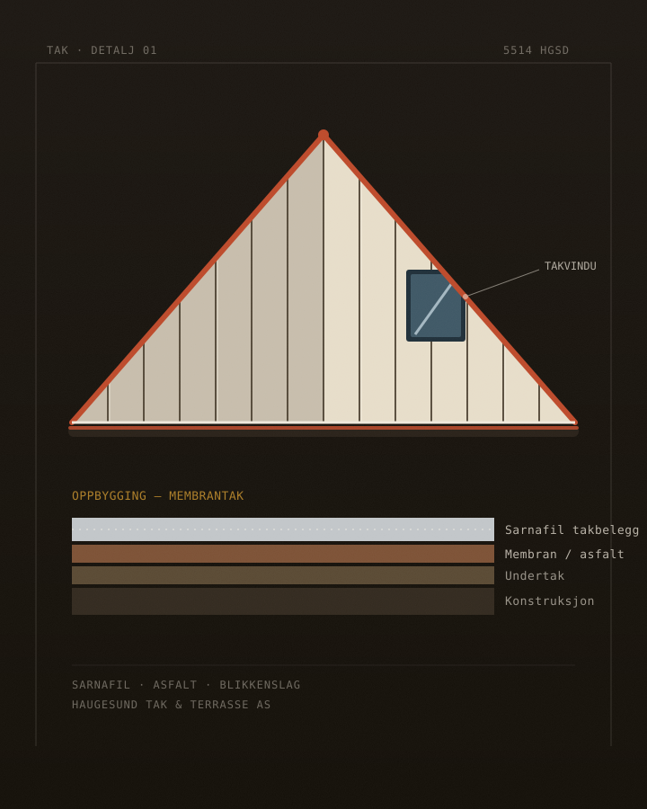
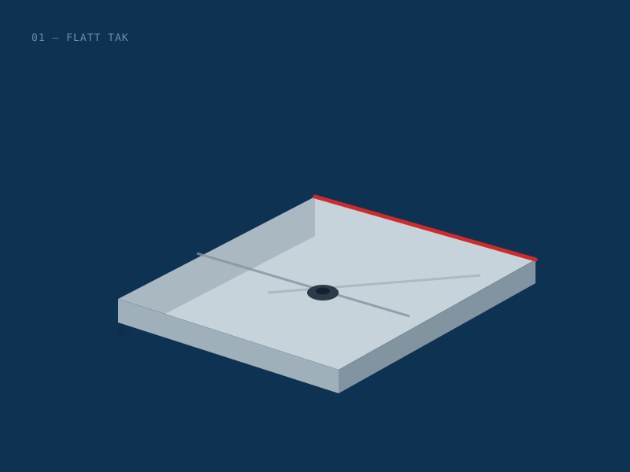
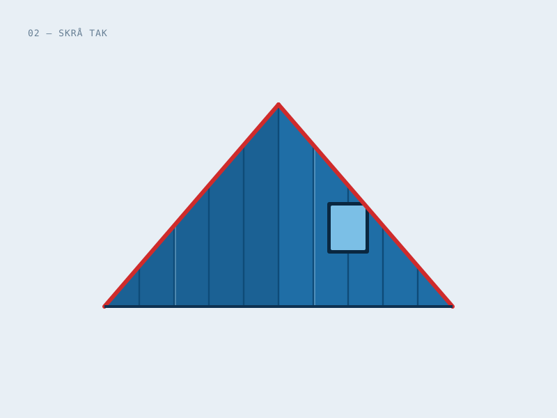
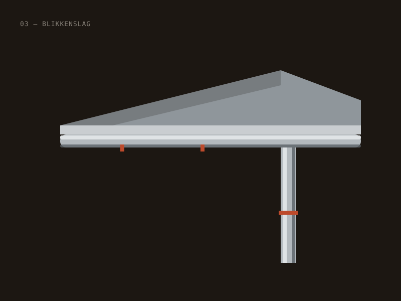
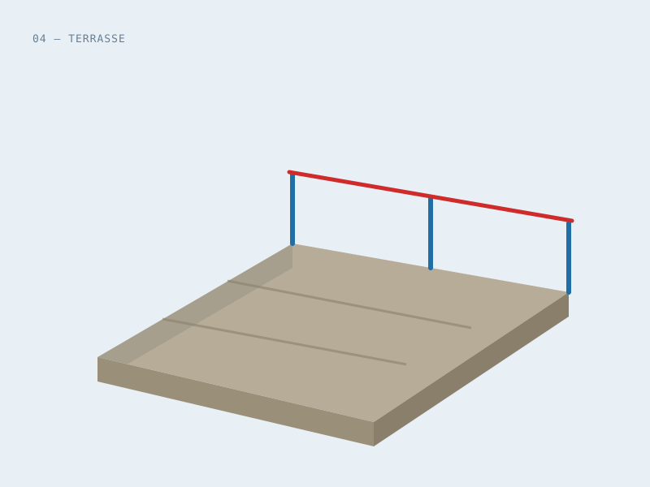

Tak som holder
tett — år etter år.
Lokal taktekker med spesialkompetanse på Sarnafil og asfalt takbelegg. Fra membran på flate tak til blikkenslag og terrasse — vi tar hånd om hele taket.
- Erfaring
- 25 år
- Spesialitet
- Sarnafil
- Medlem
- Takringen
- Base
- Haugesund

Membrantak · detaljHaugesund Tak & Terrasse AS er en lokal taktekker med base i Stølevegen 11. Vi er spesialister på Sarnafil og asfalt takbelegg — og har 25 års erfaring med tak og terrasser på Haugalandet.
Som medlem av bransjeforeningen Takringen jobber vi etter fagets standarder, fra befaring til ferdig, tett tak. Ta kontakt med Gary eller Jan Atle for en uforpliktende prat om ditt prosjekt.
Alt taket trenger — fra membran til beslag
Vi er taktekkere med spesialkompetanse på membran. Klikk for å se hva som inngår i hvert område. Endelig omfang avtales i hvert prosjekt.
Taktekking
Nytt tak og rehabilitering — flate og skrå tak for bolig og næring.
Vi legger og skifter tekking på flate og skrå tak, for både nybygg og rehabilitering. Fokus på riktig oppbygging og tette detaljer som tåler vestlandsværet.
- Flate og skrå tak
- Nybygg og rehabilitering
- Undertak og tekking
- Bolig, næring og offentlig bygg
Sarnafil & asfalt takbelegg
Firmaets spesialitet: vanntett membrantekking.
Membrantekking med Sarnafil takfolie og asfalt takbelegg — en varig, vanntett løsning for flate og svakt skrå tak, terrasser og tak over kjeller/garasje.
- Sarnafil takfolie
- Asfalt takbelegg
- Vanntette gjennomføringer
- Flate og svakt skrå tak
Blikkenslagerarbeid
Beslag, takrenner og nedløp som hører med til et tett tak.
Vi utfører blikkenslagerarbeid som en del av takjobben — beslag rundt detaljer, samt takrenner og nedløp som leder vann trygt bort fra bygget.
- Beslag og detaljer
- Takrenner
- Nedløp
- Tilpasset tekkingen
Terrasse
Uterom og terrasser — med tett membran der det trengs.
Vi bygger og utbedrer terrasser og uterom, og legger vanntett membran på tak-terrasser og andre flater som skal tåle vann og vær.
- Terrasse og platting
- Membran på tak-terrasse
- Tilpasset ditt bygg
Fagkompetanse, lokalt forankret i Haugesund.
Et tett tak er ikke noe man legger merke til — men det er den viktigste jobben på hele bygget. Derfor gjør vi den skikkelig.— Haugesund Tak & Terrasse
Slik kan en referanseside se ut
Grafikkene under er laget for demoen for å vise oppsettet — de byttes ut med foto fra egne prosjekter.

Flatt tak · membran
Illustrasjon
Skrå tak · tekking
Illustrasjon
Blikkenslag
Illustrasjon
Terrasse
IllustrasjonDemo · illustrasjoner erstattes med ekte prosjektfoto før lansering.